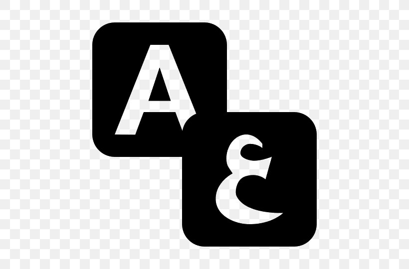
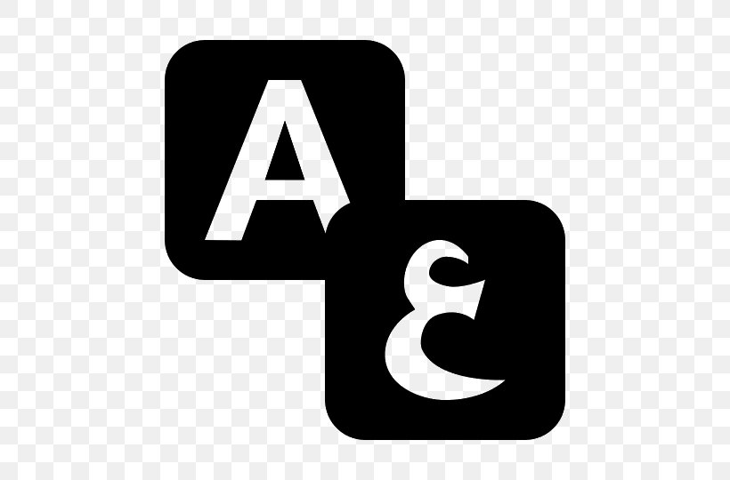

The Story of the companions of the Elephant
The Story of the companions of the Elephant
 

Then Abraha built the cathedral in San'a’, such a church as could not be seen elsewhere in any part of the world at that time. He wrote to the Negus saying: ‘I have built a church for you, O King, such as has not been built for any king before you. I shall not rest until I have diverted the Arabs’ pilgrimage to it.’ When the Arabs were talking about this letter of his, one of the calendar intercalators was enraged. The intercalators are those who used to adjust the months for the Arabs in the time of ignorance. They would make one of the holy months profane, and make one of the profane months holy to balance the calendar.
The Kinanite went forth until he came to the cathedral and defiled it. Then he returned to his own country. Hearing of the matter Abraha made inquiries and learned that the outrage had been committed by an Arab who came from the temple in Mecca where the Arabs went on pilgrimage, and that he had done this in anger at his threat to divert the Arabs’ pilgrimage to the cathedral, showing thereby that it was unworthy of reverence.
Abraha was enraged and swore that he would go to this temple and destroy it. So he commanded the Abyssmians to prepare and make ready, and sallied forth with the elephant. News of this plunged the Arabs into alarm and anxiety and they decided that it was incumbent on them to fight against him when they heard that he meant to destroy the Ka'ba, Allah’s holy house.
A member one of the ruling families in the Yaman, Dhu Nafr by name summoned his people and such of the Arabs as would follow him to fight Abraha and stop him from attacking and destroying Allah’s holy house A certain number supported him, but after a battle Dhu Nafr and his followers were put to flight and he himself was taken prisoner and brought to Abraha.
Abraha continued on his road to Mecca until in the country of Khath'am he was opposed by Nufayl b. Habib al-Khath'ami with their two tribes Shahran and Nahis and such of the Arab tribes as followed him. After an engagement he was defeated and taken prisoner. When Abraha thought of killing him, Nufayl said: ‘Don't kill me, O King, for I will be your guide in the Arab country. Here are my two hands as surety that the two tribes of Khatham, Shahrto and Nahis, will obey you.’ So Abraha let him go.
He continued with him as a guide until they reach Ta'if When Mas'ud b. Mu attib came out to him with his men from Thaqif . They said to him: O King, we are your servants attentive and obedient to you. We have no quarrel with you and our temple—meaning that of al-Lat—is not the one you seek. You want only the temple in Mecca, and we will send with you a man to guide you there. He therefore passed on leaving them unmolested.
As to al-Lat it was a temple of theirs in al-Ta’if which they used to venerate as the Ka'ba is venerated. So they sent with him Abu Righal to guide him on the way to Mecca, and when he had brought him as far as al-Mughammis, Abu Righal died there and the Arabs stoned his grave. This is the grave which people in al-Mughammis. still stone.
Abraha sent an Abyssinian called al-Aswad b. Mafsud with some cavalry as far as Mecca and the latter sent off to him the plunder of the people of Tihama, the Quraysh and others, among it two hundred camels belonging to 'Abdu’l-Muftalib b. Hashim, who at that time was the leading shaykh of Quraysh. At first Quraysh, Kinana, and Hudhayl and others who were in the holy place meditated battle, but seeing that they had not the power to offer resistance they gave up the idea.
Abraha sent Hunata the Himyarite to Mecca instructing him to inquire who was the chief notable of the country and to tell him that the king’s message was that he had not come to fight them, but only to destroy the temple. If they offered no resistance there was no cause for bloodshed, and if he wished to avoid war he should return with him. On reaching Mecca Hunata was told that 'Abdu’l-Muttalib b. Hashim was the leading notable, so he went to him and delivered Abraha’s message. 'Abdu’l-Muttalib replied: ‘Allah knows that we do not wish to fight him for we have not the power to do so. This is Allah’s sanctuary and the temple of His friend Abraham.If He defends it against him it is His temple and His sanctuary; and if he lets him have it by Allah we cannot defend it!’ Hunata replied that he must come with him to Abraha, for he was ordered to bring him back with him.
So accompanied by one of his sons' , Abdu’I-Muttalib came to the camp and inquired for Dhu Nafr, for he was a friend of his. He went in to see him as he was in confinement and asked him if he could do anything to help them in their trouble. Dhu Nafr replied: ‘What use is a man held a prisoner in the hands of a king, expecting to be killed at any moment? I can do nothing to help you except that Unays the keeper of the elephant being a friend of mine, I will send to him and commend your case to him as strongly as possible asking him to try to get you permission to see the king. So speak as you think fit, and he will intercede for you with the king if he is able to do so.’ So Dhu Nafr sent to Unays saying, ‘The king has taken two hundred camels belonging to 'Abdu’l-Muttalib, leader of Quraysh and master of the Meccan well who feeds men in the plain and wild creatures on the top of the mountains, and is now here. So ask permission for him to see the king and help him as far as you can.’ He said he would do so and repeated these words to the king, adding that 'Abdu’l-Muttalib wished to see him and talk to him about a pressing matter.
Abraha agreed to see him. Now Abdu’l-Muftalib was a most impressive, handsome, and dignified man, and when Abraha saw him he treated him with the greatest respect so that he would not let him sit beneath him. He could not let the Abyssnians see him sitting beside him on his royal throne, so he got off his throne and sat upon his carpet and made 'Abdu’l-Muttalib sit beside him there. Then he told his interpreter to inquire what he wanted, and the reply was that he wanted the king to return two hundred camels of his which he had taken. Abraha replied through the interpreter, ‘You pleased me much when I saw you; then I was much displeased with you when I heard what you said. Do you wish to talk to me about two hundred camels of yours which I have taken, and say nothing about your religion and the religion of your forefathers which I have come to destroy?’ 'Abdu’I-Muttalib replied, ‘ I am the owner of the camels and the House has an owner who will defend it- When the king replied that he could not defend it against him he said, That remains to be seen,’ Abraha restored to 'Abdu’l-Muttalib the camels which he’had taken. Abdu’l-Muttalib went back to Quraysh and having given them the news ordered them to withdraw from Mecca and take up defensive positions on the peaks and in the passes of the mountains for fear of the excesses of the soldiers. Abdu’l-Muttalib took hold of the metal knocker of the Ka'ba, and a number of Quraysh stood with him praying to Allah and imploring his help against Abraha and his army. As he was holding the knocker of the temple door, Abdu’l-Muttalib said:
O Allah, a man protects his dwelling so protect Thy dwellings.
Let not their cross and their craft tomorrow overcome Thy craft
Abdu’l-Muttalib then let go the knocker of the door of the Ka'ba and went off with his Quraysh companions to the mountain tops where they took up defensive positions waiting to see what Abraha would do when he occupied Mecca.
In the morning Abraha prepared to enter the town and made his elephant ready for battle and drew up his troops. His intention was to destroy the House and then return to the Yemen. When they made the elephant (its name was Mahmud) face Mecca, Nufayl b. Habib came up to its flank and taking hold of its ear said: ‘Kneel, Mahmud, or go straight back whence you came, for you are in Allah’s holy land!’ He let go of its ear and the elephant knelt, and Nufayl made off at top speed for the top of the mountain. The troops beat the elephant to make it get up but it would not; they beat its head with iron bars; they stuck hooks into its underbelly and scarified it; but it would not get up. Then they made it face the Yemen and immediately it got up and started off. When they set it towards the north and the east it did likewise, but as soon as they directed it towards Mecca it knelt down.
Then Allah sent upon them birds from the sea like swallows and starlings; each bird carried three stones, like peas and lentils, one in its beak and two between its claws. Everyone who was hit died but not all were hit. They withdrew in flight. As they withdrew they were continually falling by the wayside dying miserably by every waterhole. Abraha was smitten in his body, and as they took him away his fingers fell off one by one. Where the finger had been, there arose an evil sore exuding pus and blood, so that when they brought him to Sana he was like a young fledgeling. They allege that as he died his heart burst from his body.
When Allah sent Prophet Muhammad (sas) he specially recounted to the Quraysh his goodness and favour in turning back the Abyssinians in order to preserve their state and permanence in the Quran: